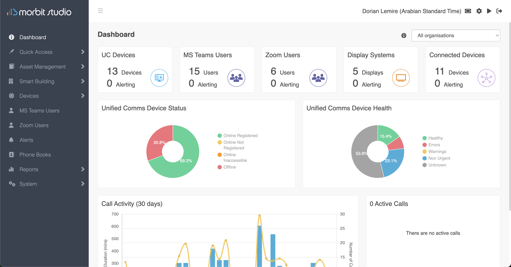

See the full estate
Bring device status, communications usage, display systems, alerts and building signals into one accessible cloud view for operations teams.
Morbit Studio unifies workplace technology, meeting-room health, connected devices and operational insight in one cloud platform. OpenGate helps bring that value to enterprise buyers and channel partners across South EMEA and Southeast Asia.

Move beyond fragmented portals and reactive support. Morbit brings the estate into a clearer operating picture while OpenGate shapes the commercial story, buyer map and regional route to market.
Bring device status, communications usage, display systems, alerts and building signals into one accessible cloud view for operations teams.
Surface device health and service issues earlier, reduce meeting friction, and give support teams a more proactive operating model.
OpenGate positions the platform for systems integrators, landlords, enterprise IT teams and smart-infrastructure partners in each target region.
Market selection, partner recruitment, buyer messaging and senior enterprise conversations—managed as one commercial motion.